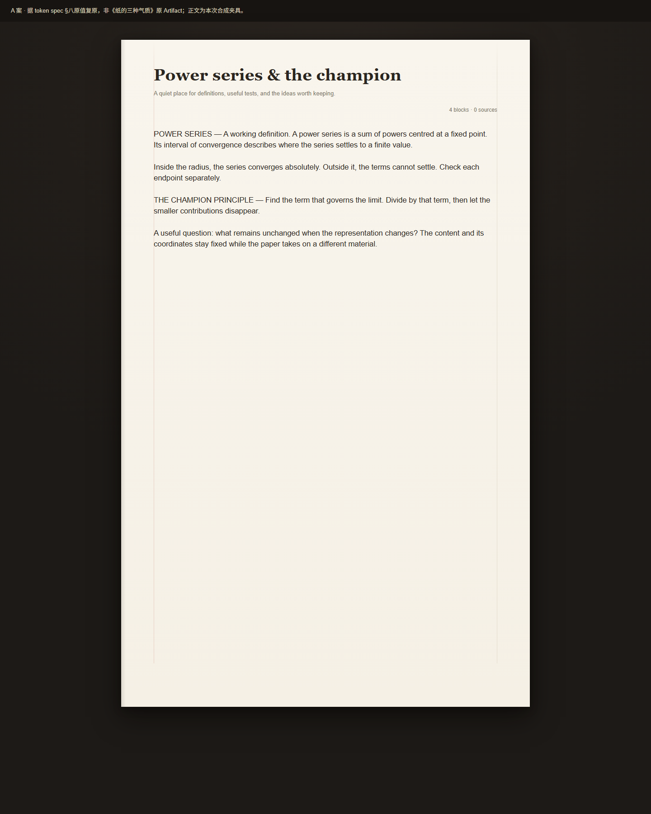
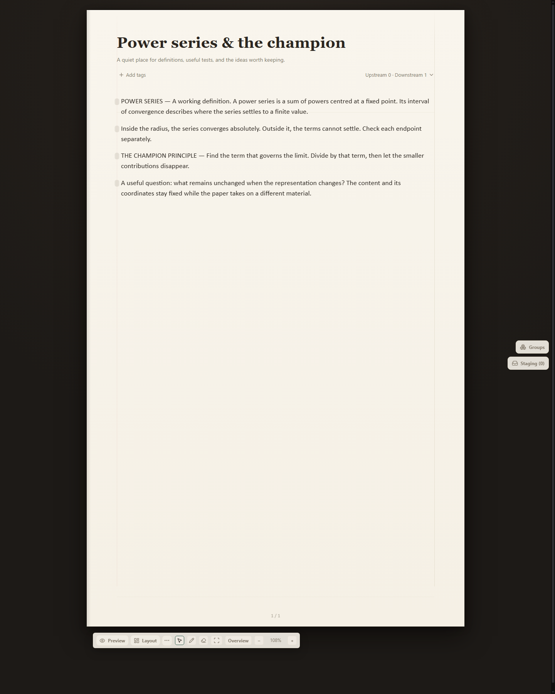

<!doctype html><meta charset="utf-8"><title>B1d material comparison</title><style>*{box-sizing:border-box}body{margin:0;background:#191714;color:#e8e0d2;font:18px/1.5 Arial,sans-serif}header{height:100px;padding:18px 26px}main{display:flex;gap:20px;padding:0 20px}figure{margin:0;width:1440px}figcaption{height:50px;padding:10px;background:#25211c}img{display:block;width:1440px;height:1800px}</style><header><strong>B1d · 暖纸材质与表头比例对照</strong><br>左：按 token spec §八原值复原，非原 Artifact；右：真实 React / HTTP / SQLite 合成夹具。比例缩放保留各自截图。</header><main><figure><figcaption>A 案参数复原（source: ../reference-a.html）</figcaption></figure><figure><figcaption>当前实现 · Warm paper · Fit width 108%</figcaption></figure></main>